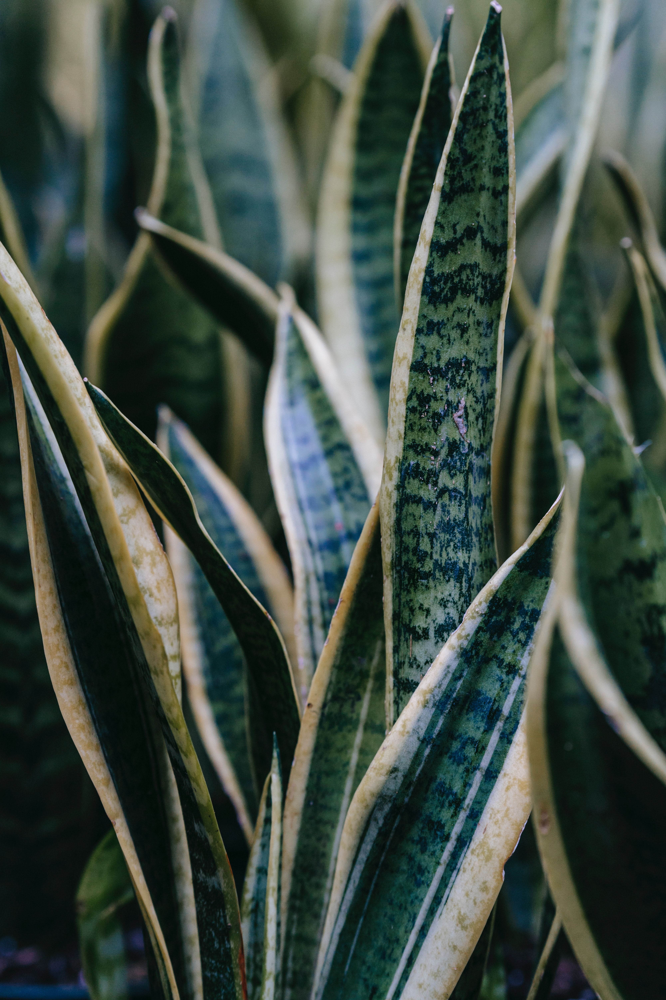

Plants
Care
Gallery
Subscription
Our Team

Snake Plants
Dining room inspiration
How to group plants together
Cactus soil mix
Garden herbs
Seating area inspiration
Livingroom inspiration
Living room inspiration